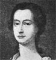
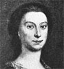
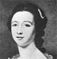
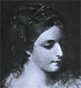

Alison Booth
Barrington, E. [i.e. Lily (Moresby) Adams Beck]. The Ladies! A Shining Constellation of Wit and Beauty. Boston: Atlantic Monthly, 1922. London: Fisher, 1922; 1923. London: Benn, 1927.
TOC: “The Diurnal of Mrs. Elizabeth Pepys: Had She Read her Husband's Diary; The Mystery of Stella: Why might not She and Vanessa Have Met?; My Lady Mary: To Dispel the Mystery of Lady Mary Wortley Montagu's quitting England in 1739; The Golden Vanity: A Story of the First Irish Beauties—the Gunnings; The Walpole Beauty: A Tale in Letters about Maria Walpole, . . . Niece of Horace Walpole; A Bluestocking at Court: Why Fanny Burney, Madame D'Arblay, Retired from Court in 1791; The Darcys of Rosing: A Reintroduction to Some of the Characters of Miss Austen's Novels.”.
NOT:=biographical fiction. Preface: “The aim of these stories is not historical accuracy. . . . rather . . . to re-create the personalities of a succession of charming women. . . . as I have imagined them” (n.p.).
-
Elizabeth Gunning
-
Mrs. Pepys
-
Esther Johnson, “Stella”
-
Hester Vanhomrigh, “Vanessa”
-
Mary Wortley Montagu
-
Maria Gunning
-
Maria Walpole
-
Fanny Burney, Madame D’Arblay
Search OCLC WorldCat for this title.
Search Google Books for this title.